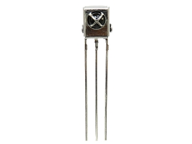
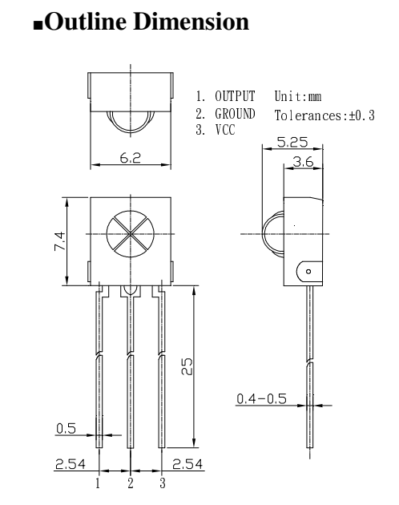
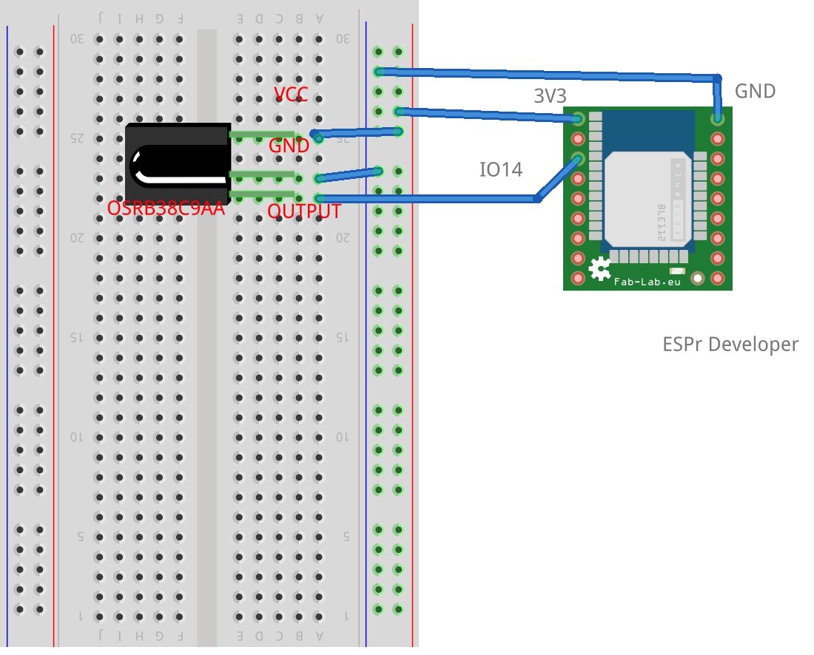
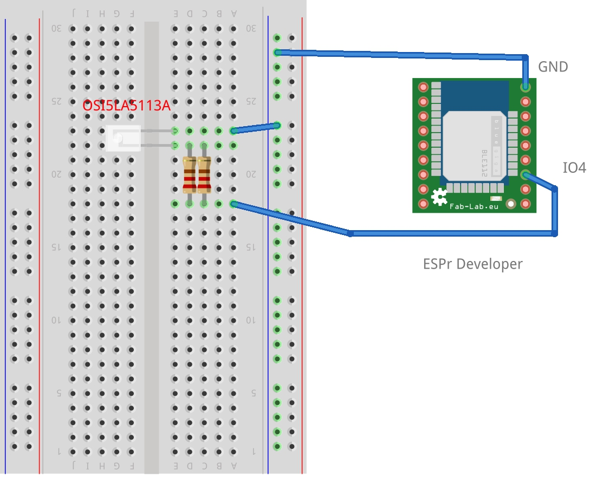

概要
Arduinoでリモコンを作成してみたいと思います。作成するリモコンは赤外線を使った一般的なリモコンです。いわゆるテレビやエアコンなどを操作するリモコンで、単純にリモコン側から赤外線を使った信号を送りつけ、本体が側がそれに反応しているタイプのものです。
一部のリモコンには一方通行ではないものがあるようですが、今回作成するArduinoのリモコンはそれには対応していません。
準備するもの
Arduinoでリモコンを作成するにあたり、必要なパーツを以下にリストします。まずArduinoでリモコンに特化したものを先に挙げます。続いて、ArduinoでLチカだったり、Raspberry Piでリモコンだったり、いわゆる電子工作として一般的に必要なものをリストします。この分類は微妙な線引きではありますが、察してやって下さい。
Arduinoでリモコンに必要なもの
| 価格 | 品名 | 備考 |
|---|---|---|
| 100円 | 赤外線リモコン受信モジュール OSRB38C9AA（2個入） | |
| 100円 | 5mm 赤外線LED OSI5LA5113A（10個入） | 可視光線のLEDもあると動作確認に便利。赤外線は目に見えないので。 |
| 200円 | 抵抗 27Ω 1W（100本入） | これである必要はありません。実際、最終的には並行に繋いで抵抗を下げました。 |
| 1980円 | ESPr® Developer（ESP-WROOM-02開発ボード） | これも他のArduinoでもOKです。実際最初はUnoを使って試していました |
電子工作として一般的に必要なもの
| 参考価格 | 品名 | 商品例 |
|---|---|---|
| 35円 | ピンヘッダ | ピンヘッダ １×４０ （４０Ｐ） |
| 270円 | ブレッドボード | ブレッドボード（1枚） |
| 180円 | ジャンパーワイヤ | ブレッドボード・ジャンパーワイヤ（オス－オス） １０ｃｍセット |
| 60円 | ユニバーサル基板 | 片面ガラスコンポジット・ユニバーサル基板 Ｃタイプ めっき仕上げ （７２×４７ｍｍ） 日本製 |
| 210円 | はんだ | はんだ ０．８ｍｍ |
| 2,300円 | はんだごて | 即熱はんだこて ＴＱ－９５（９０Ｗ／１５Ｗ） |
これらに関しては、これでなければダメというものでもありませんし、道具の類いは特に好みやこだわりもあると思いますので、手持ちのものをご使用いただくか、必要に応じて購入(場合によっては我慢)するなど、適宜ご判断の上お願いします。
実装
実装は次の3段階に分けて行います。
- 赤外線受信機能
- 赤外線送信機能
- Webブラウザリモコン化
実際に世の中で使われているリモコンというのは2の赤外線送信機能しか無いはずです。 1の赤外線受信機能は、2の送信機能で送信するデータを取得するためのものです。 3のWebブラウザリモコン化は、使用しているArduinoがWi-Fiをしゃべることから、リモコンのリモコン化(Web化)をするものです。
従って、純粋にリモコンという意味では2のみ。完成形としては2+3で、1はブレッドボード止まりで、ユニバーサル基板に実装する必要はありません。 もちろん、学習モードと言うことで、受信した値を登録可能にする所までプログラミングすると面白いですね。
実装その1
まずは、赤外線受信機能からです。
Arduinoでリモコンを作るのにちょうど良いライブラリが公開されています。
今回Arduinoとして用いたのはhttps://www.switch-science.com/catalog/2346/を用いた[https://www.switch-science.com/catalog/2500/](ESPr® Developer（ESP-WROOM-02開発ボード）)です。ESP-WROOM-02はESP8266ベースとしており、IRremoteのライブラリは使えませんが、その代わりにArduino-IRremoteをベースにしたライブラリがこれまた公開されており、これを使います。
Arduino-IRremoteもIRremoteESP8266もホント感謝ですね。
回路1
使うのはこちらのみ。(本体は別にという意味です)

モジュールの仕様を確認すると、向かって左からOUTPUT、GROUND、VCCとなっています。

ということで、単純に3つ接続すると使えるわけですが、回路は以下です。

実物そのもののパーツがなかったので代用品ですが、ピンの位置と名前をラベルで貼ってあるので伝わりますでしょうか。
スケッチ1
スケッチはこだわりのある方は別として、単に情報が取りたいだけでしたらIRremoteESP8266のサンプルスケッチにIRrecvDumpV2というのがあるのでそれで十分です。
ここの載せちゃってもライセンス的に平気だとは思いますが、サンプルなので割愛です。
動作確認1
実際に手持ちのリモコンを受信機に向けて、ボタンを一押しします。
うちのTVのリモコンの電源ボタンをONしてみました。
01:15:20.680 -> Encoding : NEC
01:15:20.680 -> Code : 30EEB14E (32 bits)
01:15:20.713 -> Timing[67]:
01:15:20.747 -> +8800, -4400 + 550, - 550 + 550, - 550 + 550, -1700
01:15:20.818 -> + 500, -1700 + 550, - 550 + 550, - 550 + 550, - 550
01:15:20.890 -> + 550, - 550 + 550, -1650 + 600, -1650 + 550, -1650
01:15:20.957 -> + 550, - 550 + 550, -1650 + 550, -1650 + 550, -1650
01:15:21.023 -> + 600, - 600 + 500, -1650 + 550, - 550 + 550, -1650
01:15:21.094 -> + 550, -1700 + 500, - 600 + 550, - 550 + 550, - 550
01:15:21.160 -> + 550, -1650 + 550, - 550 + 550, -1700 + 550, - 550
01:15:21.227 -> + 550, - 550 + 550, -1650 + 550, -1650 + 550, -1700
01:15:21.336 -> + 500, - 550 + 550
01:15:21.336 -> unsigned int rawData[67] = {8800,4400, 550,550, 550,550, 550,1700, 500,1700, 550,550, 550,550, 550,550, 550,550, 550,1650, 600,1650, 550,1650, 550,550, 550,1650, 550,1650, 550,1650, 600,600, 500,1650, 550,550, 550,1650, 550,1700, 500,600, 550,550, 550,550, 550,1650, 550,550, 550,1700, 550,550, 550,550, 550,1650, 550,1650, 550,1700, 500,550, 550}; // NEC 30EEB14E
01:15:21.750 -> unsigned int data = 0x30EEB14E;
01:15:21.750 ->
結果は内容全てに意味はあるのですが、次の実装で使うのは1行目のNECであることと2行目の30EEB14Eです。 RAWデータも使えますので、興味のある方は、次の実装2で見かけたライブラリの機能を深掘りしてみて下さい。
ここでやることは作成するリモコンで走査したいボタンの情報を全て集めると言うことです。
実装その2
つぎは純粋にArduinoでリモコンです。 実装1の内容とこの実装2の内容を1つにしてしまっても構いませんが、ここでは一旦チャラにしています。
回路2

抵抗を2つにしたのは単に思ったよりも赤外線が弱くてかなり近づけないと反応しなかったからで、本体、LEDなど壊れない範囲でお好みで。
スケッチ2
これまた、サンプルがあるのでそれを少しいじればOKです。 サンプルではなくて、私が実際に使っているものはスケッチ3を見て下さい。
使うのはIRremoteESP8266のIRsendDemoです。
先ほどの電源ONの場合どうなるかというと
void loop() {
Serial.println("NEC");
irsend.sendNEC(0x30EEB14E);
delay(2000);
}
でも、くれぐれも真似しないで下さいね。そうです、2秒おきに電源のON/OFFが繰り返されます。 ま、メーカーが違えば何の問題も無いんですが。
そして先ほど深掘りしてといっていたのはirsend.sendRaw()のことです。RAWデータをメモしておいて、これに与えると同じことが出来ます。
動作確認2
この例の場合、スケッチを描き込むと、問答無用で2秒おきに電源ボタンが押されていくので、テレビに向けたり外したりをして確認できればと思います。
上手く動作しない場合
デバッグその1
赤外線LEDが本当に光っているかが最も気になるところかと思いますが、それを確かめる方法を紹介する前に、まずは可視光を放つLEDでデバッグしてみましょう。
スケッチに変更はありません。ただただLEDを可視光を放つLEDに変更してみます。
多分ですが光るんですよ、これが。 そんでもって、押したボタンのバリエーション分だけ別のリズムで光るんですよ。 こんな回路で間違えるわけ無いですもんね。。。
デバッグその2
可視光のLEDが実際に光った場合、それでも赤外線LEDは光っていないのではないかと疑心暗鬼になる気持ち、十分すぎるほどに分かります。私自身がそうでした。
過去には携帯電話(ガラケー)のカメラであれば、赤外線の光線を撮影することが可能でした。最近のスマートフォンの場合は赤外線をカットしているものがあり、お手元のスマートフォンで写るかどうかは分かりませんが、幸いなことにお手元のリモコンは確実に赤外線を発しているはずで、それを撮影することで写るカメラであるかどうかはすぐに判断可能です。
なお、iPhoneの場合にはインカメラ(液晶画面側のカメラ)であれば赤外線の光が写ります。
そのカメラを使って赤外線LEDが光っているかを確かめてみましょう。 あー、一つだけ言っておきますと、真っ暗闇でやった方が良いかもしれません。私は見えなくて泣きそうでしたから。
実装その3
いよいよ最終形です。Webリモコン化します。
回路3
回路は実装その2と変わりません。
スケッチ3
#include <Arduino.h>
#include <ESP8266WebServer.h>
#include <ESP8266WiFi.h>
#include <ESP8266mDNS.h>
#include <IRremoteESP8266.h>
#include <IRsend.h>
#include <WiFiClient.h>
#ifndef STASSID
#define STASSID "xxxxxxxxxx"
#define STAPSK "xxxxxxxxxx"
#endif
const char* ssid = STASSID;
const char* password = STAPSK;
ESP8266WebServer server(80);
const int led = 13;
//赤外線シグナル送信
const uint16_t kIrLed = 4; // ESP8266 GPIO pin to use. Recommended: 4 (D2).
IRsend irsend(kIrLed); // Set the GPIO to be used to sending the message.
//リモコンのシグナル定義
const unsigned int ON_OFF = 0x30EEB14E;
const unsigned int UP = 0x30EE39C6;
const unsigned int DOWN = 0x30EE43BC;
const unsigned int RIGHT = 0x30EE03FC;
const unsigned int LEFT = 0x30EE7986;
const unsigned int FILE_LIST = 0x30EEC738;
const unsigned int PROGRAM_TABLE = 0x30EED926;
const unsigned int MENU = 0x30EEC33C;
const unsigned int BACK = 0x30EEB946;
const unsigned int SCREEN_DISPLAY = 0x30EE29D6;
const unsigned int PLAY = 0x30EE8B74;
const unsigned int STOP = 0x30EE2BD4;
const unsigned int FORWARD = 0x30EE4BB4;
const unsigned int BACKWARD = 0x30EE0BF4;
const unsigned int ENTER = 0x30EEF906;
const unsigned int TV = 0x30EEBB44;
const unsigned int BS = 0x30EE7B84;
//============================================================================
// Function
//============================================================================
void handleRoot() {
digitalWrite(led, 1);
server.send(200, "text/plain", "hello from esp8266!");
digitalWrite(led, 0);
}
//------------------------------------------------
void handleNotFound() {
digitalWrite(led, 1);
String message = "File Not Found\n\n";
message += "URI: ";
message += server.uri();
message += "\nMethod: ";
message += (server.method() == HTTP_GET) ? "GET" : "POST";
message += "\nArguments: ";
message += server.args();
message += "\n";
for (uint8_t i = 0; i < server.args(); i++) {
message += " " + server.argName(i) + ": " + server.arg(i) + "\n";
}
server.send(404, "text/plain", message);
digitalWrite(led, 0);
}
//------------------------------------------------
void sendSignal(String button) {
if (button == "ON_OFF") {
irsend.sendNEC(ON_OFF, 32);
} else if (button == "UP") {
irsend.sendNEC(UP, 32);
} else if (button == "DOWN") {
irsend.sendNEC(DOWN, 32);
} else if (button == "RIGHT") {
irsend.sendNEC(RIGHT, 32);
} else if (button == "LEFT") {
irsend.sendNEC(RIGHT, 32);
} else if (button == "FILE_LIST") {
irsend.sendNEC(FILE_LIST, 32);
} else if (button == "PROGRAM_TABLE") {
irsend.sendNEC(PROGRAM_TABLE, 32);
} else if (button == "MENU") {
irsend.sendNEC(MENU, 32);
} else if (button == "BACK") {
irsend.sendNEC(BACK, 32);
} else if (button == "SCREEN_DISPLAY") {
irsend.sendNEC(SCREEN_DISPLAY, 32);
} else if (button == "PLAY") {
irsend.sendNEC(PLAY, 32);
} else if (button == "STOP") {
irsend.sendNEC(STOP, 32);
} else if (button == "FORWARD") {
irsend.sendNEC(FORWARD, 32);
} else if (button == "BACKWARD") {
irsend.sendNEC(BACKWARD, 32);
} else if (button == "favicon.ico") {
Serial.println("favicon request");
return;
} else {
Serial.println("invalid request");
return;
}
Serial.println("IR signal sended");
server.sendHeader("Location", "http://always-basics.com/RemoCon.html");
server.send(302, "text/plain", "this works as well");
}
//------------------------------------------------
void handle_ON_OFF() { sendSignal("ON_OFF"); }
void handle_UP() { sendSignal("UP"); }
void handle_DOWN() { sendSignal("DOWN"); }
void handle_RIGHT() { sendSignal("RIGHT"); }
void handle_LEFT() { sendSignal("LEFT"); }
void handle_FILE_LIST() { sendSignal("FILE_LIST"); }
void handle_PROGRAM_TABLE() { sendSignal("PROGRAM_TABLE"); }
void handle_MENU() { sendSignal("MENU"); }
void handle_BACK() { sendSignal("BACK"); }
void handle_SCREEN_DISPLAY() { sendSignal("SCREEN_DISPLAY"); }
void handle_PLAY() { sendSignal("PLAY"); }
void handle_STOP() { sendSignal("STOP"); }
void handle_FORWARD() { sendSignal("FORWARD"); }
void handle_BACKWARD() { sendSignal("BACKWARD"); }
void handle_ENTER() { sendSignal("ENTER"); }
void handle_TV() { sendSignal("TV"); }
void handle_BS() { sendSignal("BS"); }
//============================================================================
// Setup
//============================================================================
void setup(void) {
pinMode(led, OUTPUT);
digitalWrite(led, 0);
irsend.begin();
Serial.begin(115200, SERIAL_8N1, SERIAL_TX_ONLY);
WiFi.mode(WIFI_STA);
WiFi.begin(ssid, password);
Serial.println("");
// Wait for connection
while (WiFi.status() != WL_CONNECTED) {
delay(500);
Serial.print(".");
}
WiFi.config(IPAddress(192, 168, 3, 103), WiFi.gatewayIP(), WiFi.subnetMask());
Serial.println("");
Serial.print("Connected to ");
Serial.println(ssid);
Serial.print("IP address: ");
Serial.println(WiFi.localIP());
if (MDNS.begin("esp8266")) {
Serial.println("MDNS responder started");
}
server.on("/", handleRoot);
server.on("/ON_OFF", handle_ON_OFF);
server.on("/UP", handle_UP);
server.on("/DOWN", handle_DOWN);
server.on("/RIGHT", handle_RIGHT);
server.on("/LEFT", handle_LEFT);
server.on("/FILE_LIST", handle_FILE_LIST);
server.on("/PROGRAM_TABLE", handle_PROGRAM_TABLE);
server.on("/MENU", handle_MENU);
server.on("/BACK", handle_BACK);
server.on("/SCREEN_DISPLAY", handle_SCREEN_DISPLAY);
server.on("/PLAY", handle_PLAY);
server.on("/STOP", handle_STOP);
server.on("/FORWARD", handle_FORWARD);
server.on("/BACKWARD", handle_BACKWARD);
server.on("/ENTER", handle_ENTER);
server.on("/TV", handle_TV);
server.on("/BS", handle_BS);
server.on("/inline",
[]() { server.send(200, "text/plain", "this works as well"); });
server.onNotFound(handleNotFound);
server.begin();
Serial.println("HTTP server started");
}
//============================================================================
// Main
//============================================================================
int cnt = 0;
void loop(void) {
cnt += 1;
if (cnt % 100000 == 0) {
Serial.print(".");
cnt = 0;
}
// delay(2000);
server.handleClient();
MDNS.update();
}
ちょっと余計なものも見えていますが、ご愛敬と言うことで。
今回Arduinoとして用いたのはESP-WROOM-02を用いたESPr® Developer（ESP-WROOM-02開発ボード）です。このボードの用いた理由は、一番は私のような素人でも取り扱いやすいということですが、同時にWi-Fiで制御することが可能になります。
具体的にはArduinoをWebサーバーとして自宅のWi-Fiルータに接続しています。多くの場合DHCPで繋いでいるのではないかと思いますが今回はやりやすいように固定にしました。(自宅のWi-Fiの設定をいじって固定のIPを割り振っています) ArduinoのWebサーバーでは、リモコンの各ボタンをURLと紐付けてアクセスされたURLに応じて赤外線のシグナルを発信するという形です。
また一つ工夫をしています。それはHTMLを外部に持たせることにしました。ArduinoをWebサーバーにしたのは良いのですが、HTMLを返させるには少々編集に手間が掛かります。 そこでHTMLは外部のサーバーに配置しています。Webブラウザからみるとリンク先が自宅内のネットワーク上にあるWebサーバーを指していますので、HTTPリクエストは無事にArduinoへ届きます。Arduinoでは"302 Moved Temporarily"を返し、再び外部のWebサーバー上のHTMLへ戻るようにしています。
この方法は、ArduinoにWebSocketをしゃべらせて外部サーバーと通信させるケースに比べてセキュリティに優れていると思います。
いずれにしてもこの方法は単純にHTMLを編集し、その中でリンクしているURLの機能をArduinoのWebで実行されるようにしているという極めて単純な連動を用意すると、色々とスマートフォンから操作したいと思ったときに安全にやる1つの方法だということです。もちろん、同じWi-Fiルーターに接続していないと使えないわけですが。
編集後記
軟弱な(Softwareな)世界に生きていると、電子工作(ハード)な世界のデバッグのやりづらさたるや半端ない負担で、実際にはこれもう一つ回路設計しないと分からないのでは？と思うこともあるほどですが…
今回は送信と受信のArduinoを用意して、それをお迎え合わせにして確かめたりもしました。
comments powered by Disqus